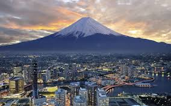
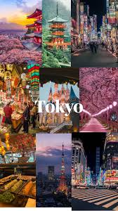
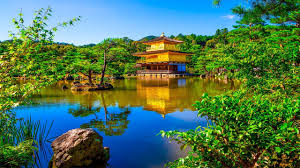
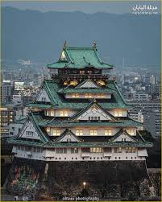

جبل فوجي أعلى جبل في اليابان ويعد رمزاً طبيعياً للبلاد.
富士山は日本で最も有名な山です

طوكيو عاصمة اليابان وتعد واحدة من أكبر المدن وأكثرها تطوراً في العالم.
東京は日本の首都であり最大の都市です。

كيوتو مدينة تاريخية تشتهر بالمعابد والحدائق التقليدية.
京都は多くの寺院で有名な歴史的な都市です。

قلعة تاريخية شهيرة تعد من أهم معالم اليابان السياحية.
大阪城は日本の有名な歴史的な城です。